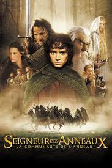
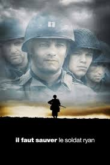
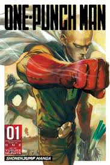

Après 3 ans de débauche, j'ai enfin decidé de me prendre en main, mais bon voilà mes films preférés!
Ahhh et n'hésitez pas a visiter mes différents profils!
Toi aussi tu peux faire ma formation!|  |
Le Seigneur des AnneauxL'un des meilleurs film de ma sélection, répartie en 3 volets, cette trilogie retrace l'aventure d'un Hobbit(semi-homme dans cette univer) qui as pour mission de detruire l'anneau Unique! |
|  |
Il faut sauver le Soldat RyanHistoire d'un compagnie de l'armé américaine lors de la seconde guerre mondiale, elle a pour mission de secourir le dernier des quatre fils partie faire la guerre contre l'allemagne Hittlerienne! |
|  |
One Punch ManAnimé décalé et complètement barré, ce manga est une turie dans tout les sens du terme ! |